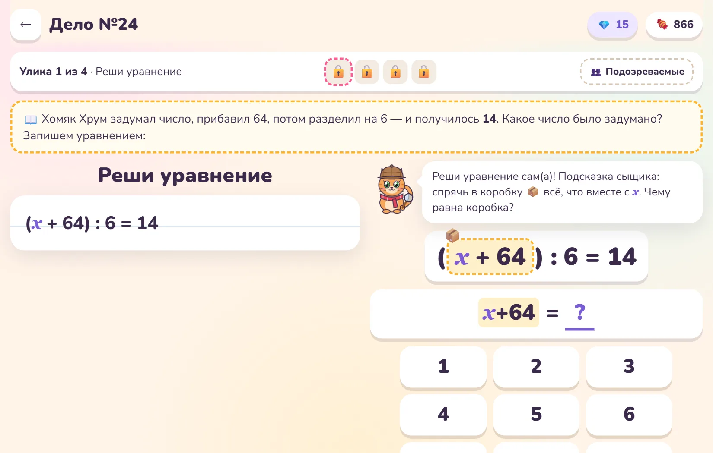
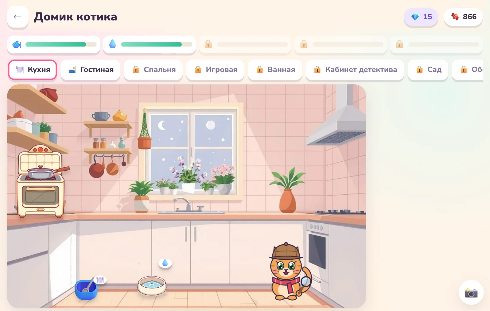
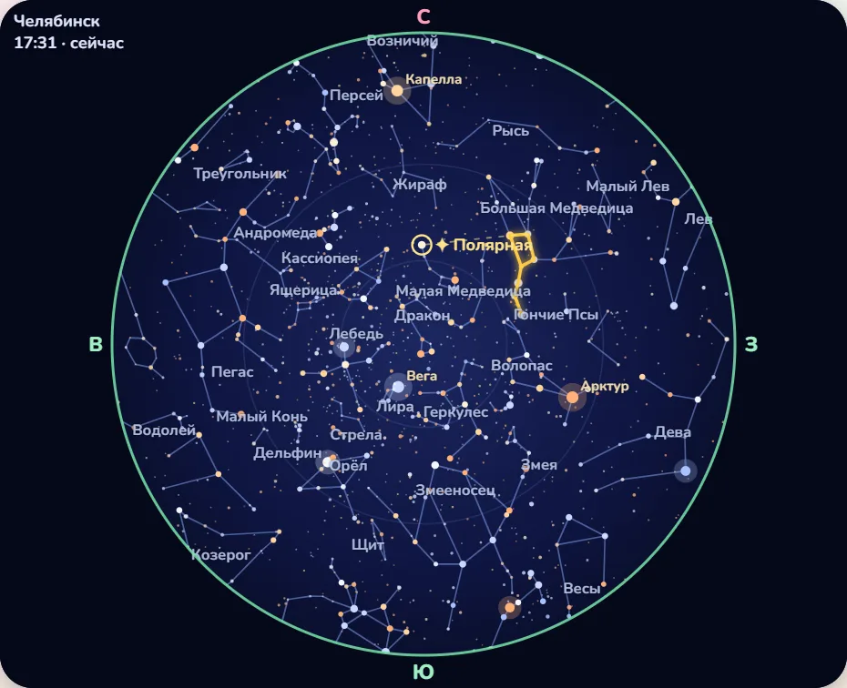
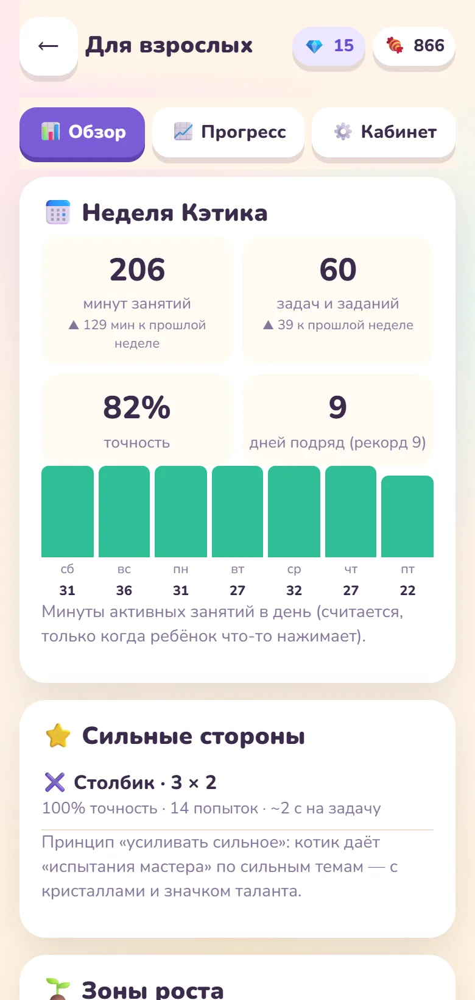

Учёба — как расследование с котиком-сыщиком
Вся математика 4 класса, космос, ОБЖ, мышление и скорочтение. Ребёнок решает задачи, чтобы найти улики и поймать вора сладостей, а родители видят, что получается и что пока трудно.
Сейчас бесплатно · без рекламы · работает в браузере на телефоне, планшете и компьютере


Сюда хочется возвращаться
Каждая решённая задача — улика, сладость в копилку и шаг к новому званию. Котик хвалит, подсказывает и не ругает за ошибки.

🔍 Детективные дела
В Сладкограде пропадают торты и конфеты. Чтобы найти вора, нужно решить четыре задачи: каждая открывает улику. В конце ребёнок сам называет подозреваемого.
- Почти сотня преступлений и десятки персонажей с голосами
- Задачи из всей программы 4 класса, по выбранным темам
- Ошибки Енота: найди, где он посчитал неправильно
📚 Академия сыщика
13 предметов, 131 тема. Короткие уроки с картинками и настоящими фотографиями, потом тренажёр и мини-игры: собрать Солнечную систему, спасти котика по правилам первой помощи, отличить фейк от новости.
- Космос, окружающий мир, тело человека, ЗОЖ
- ОБЖ и безопасность в интернете
- Критическое мышление, общение, креативность, скорочтение

🏠 Свой котик и его домик
За задачи ребёнок получает сладости и кристаллы, а на них покупает котику наряды, мебель и игрушки. Котика нужно кормить и развлекать. Есть примерочная, фотостудия и дипломы, которые можно показать бабушке.
- Пять комнат, вещи на полках и столах
- 26 нарядов, окрасы шёрстки за достижения
- Друзья приходят в гости — только после разрешения родителя

🔭 Настоящее звёздное небо
В домике стоит телескоп. Он открывает карту неба над вашим городом на сегодняшний вечер: все 88 созвездий, яркие звёзды и Полярная. А после 120 решённых задач котик отправляется в космическое путешествие по планетам.
Видно, что ребёнок понял, а что нет
Тренажёр не просто считает минуты. Он замечает сильные стороны и темы, где ребёнку пока трудно, и подстраивает задания.
Программа 4 класса
Числа до миллиона, деление с остатком, задачи на движение и работу, доли, площадь, время, таблицы. Темы идут по федеральной рабочей программе.
Котик-тренер
Даёт «задание роста» по самой полезной теме и «испытание мастера» там, где получается. Ошибки возвращаются на повторение через несколько дней.
Отчёт каждую неделю
В разделе для взрослых и в Telegram: сколько минут занимался, точность, сильные стороны, зоны роста и что сказать ребёнку.
Честные минуты
Время считается, только когда ребёнок что-то делает. Если планшет просто лежит, минуты не идут.
Ваши приоритеты
В личном кабинете отметьте, что важно: умножение, чтение, логика. Котик будет чаще предлагать эти темы.
Без рекламы
Никаких баннеров и покупок за деньги внутри игры. Сладости и кристаллы зарабатываются только задачами.

«Уравнения · Составные пока трудно. Помогает метод коробки: закройте часть уравнения ладонью и спросите, какое число здесь спрятано».Так выглядит совет из еженедельного отчёта: конкретная тема и что сделать дома.
Открыть кабинет родителяДетский продукт по‑взрослому
Данные в России
Прогресс хранится на сервере в России. Регистрирует ребёнка только родитель, с согласием по 152-ФЗ. Данные можно выгрузить или удалить из кабинета в любой момент.
Вход без паролей
Родитель входит по коду из письма. Ребёнок — по семейному коду и картинке-ПИНу из трёх смайликов. Раздел для взрослых закрыт ПИНом.
Друзья — с разрешения
Ходить в гости к друзьям можно, только когда родитель привязал ребёнка к кабинету. Переписки между детьми нет.
Разговор с котиком
Котик отвечает с помощью нейросети, его можно отключить в настройках. Тревожные сообщения видит команда, остальная переписка на сервере не хранится.
Важные навыки
Как вести себя с незнакомцами, мошенниками и в интернете, куда звонить и как помочь при ушибе или ожоге — спокойно и без страшилок.
Энциклопедия взросления
Отдельный раздел про тело, эмоции и границы. Его содержание не попадает в отчёты: это личное пространство ребёнка.
Оператор персональных данных — ИП Костылев В. Ю. Политика обработки данных · Согласие
Три минуты — и котик ваш
Откройте в браузере
murlok.tech-wave.ru — на телефоне, планшете или компьютере. Можно добавить на главный экран как приложение.
Ребёнок называет котика
Имя сыщика, имя напарника — и первое дело. Начать лучше со «Школы сыщика», котик всё объяснит.
Родитель открывает кабинет
По почте, без пароля. Прогресс сохранится в облаке, появятся друзья, отчёты и вход с других устройств.
Что обычно спрашивают
Сколько это стоит?
Сейчас тренажёр бесплатный. Если появится платная версия, всё, что ребёнок уже заработал, останется с ним.
Для какого возраста?
Задумано для 4 класса (9–11 лет). Третьеклассникам подойдёт таблица умножения, уроки Академии и игры. Пятиклассникам — повторение и сложные уровни.
Сколько времени в день нужно заниматься?
Достаточно 15–20 минут. Задание дня — пять задач, а сундуки за 10 и 20 задач остаются бонусом для тех, кто увлёкся.
Нужно ли что-то устанавливать?
Нет, всё работает в браузере. Если добавить сайт на главный экран, он откроется как приложение и будет работать даже без интернета (кроме облака и чата с котиком).
Можно ли несколько детей?
Да. В кабинете родителя можно добавить нескольких детей, у каждого будет свой котик, свой прогресс и своя картинка-ПИН.
Куда писать, если что-то не работает?
На почту team@tech-wave.ru. Мы читаем каждое письмо.